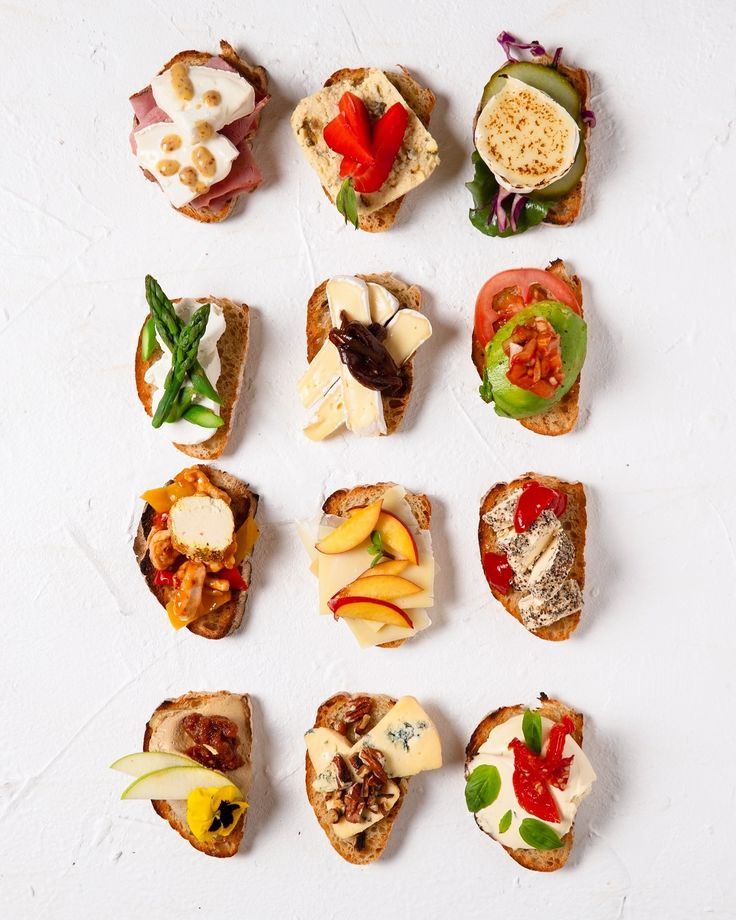

Receta de Bruschettas

Ingredientes:
- 1 pan tipo baguette
- 2 tomates
- 1 diente de ajo
- Albahaca fresca
- Aceite de oliva
- Sal y pimienta
Paso a paso:
- Cortar el pan y tostarlo.
- Frotar con ajo.
- Mezclar tomates con condimentos.
- Servir sobre las tostadas justo antes de comer.